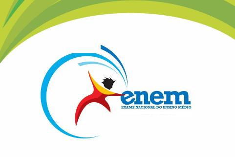

Vestibulares
A seguir disponibilizamos informações acerca das provas de vestibulares mais realizadas pelos brasileiros. Já se imaginou estudando em alguma delas?
ENEM
O Exame Nacional do Ensino Médio (Enem) é uma prova elaborada pelo Ministério da Educação para verificar o domínio de competências e habilidades dos estudantes que concluíram o ensino médio. Ao longo dos anos inúmeras funções foram atribuídas ao Enem, merecendo destacar que, desde 2009, o exame tornou-se umas das principais portas de entrada no ensino superior no Brasil.
Atualmente, a prova é composta por 180 questões de múltipla escolha, distribuídas da seguinte maneira:
- Área do conhecimento: Ciências da Natureza e suas tecnologias
- Disciplinas avaliadas: Química, Física e Biologia
- Número de questões: 45
- Área do conhecimento: Ciências Humanas e suas tecnologias
- Disciplinas avaliadas: História, Geografia, Filosofia e Sociologia
- Número de questões: 45
- Área do conhecimento: Linguagens, Códigos e suas tecnologias
- Disciplinas avaliadas: Língua Portuguesa, Literatura, Língua Estrangeira (Inglês ou Espanhol), Artes, Educação Física e Tecnologias da Comunicação e Informação
- Número de questões: 45
- Área do conhecimento: Matemática e suas tecnologias
- Disciplinas avaliadas: Matemática (Álgebra e Geometria)
- Número de questões: 45
Redação: Avalia cinco competências. A nota para cada uma vai de 0 a 200. A nota final é a soma simples das obtidas em cada competência.
Para saber mais, basta acessar o site oficial do ENEM:
UERJ
A história da Universidade do Estado do Rio de Janeiro começa em 1950, com a fundação da Universidade do Distrito Federal (UDF). Ao longo dessas décadas, a UERJ cresceu e firmou-se como uma das principais universidades do País. Sua importância no espaço acadêmico brasileiro pode ser atestada pela qualidade da formação superior que oferece, pelo valor da sua produção científica, pelas centenas de projetos de extensão em desenvolvimento, pela promoção da cultura e pelos inúmeros serviços prestados à população.
A pontuação do Vestibular UERJ na 1ª Fase é por faixas de conceito. É que, de acordo com os resultados do Exame de Qualificação, os candidatos são alocados em 5 faixas para a realização do Exame Discursivo. O edital do vestibular UERJ diz o seguinte:
- 0 a 24 acertos: Conceito E. O candidato não pode fazer a 2ª fase
- 25 a 30 acertos: Conceito D. O candidato ganha 5 pontos e pode fazer a 2ª fase
- 31 a 36 acertos: Conceito C. O candidato ganha 10 pontos e pode fazer a 2ª fase
- 37 a 42 acertos: Conceito B. O candidato ganha 15 pontos e pode fazer a 2ª fase
- 43 a 60 acertos: Conceito A. O candidato ganha 20 pontos e pode fazer a 2ª fase
Unicamp
O Vestibular Unicamp tem por objetivo classificar e selecionar candidatos para a matrícula inicial na Universidade Estadual de Campinas (Unicamp). A seleção é feita pela Comissão Permanente para os Vestibulares (COMVEST) por meio de provas discursivas e valorização da redação.
Para saber mais, basta acessar o site oficial da UNICAMP: